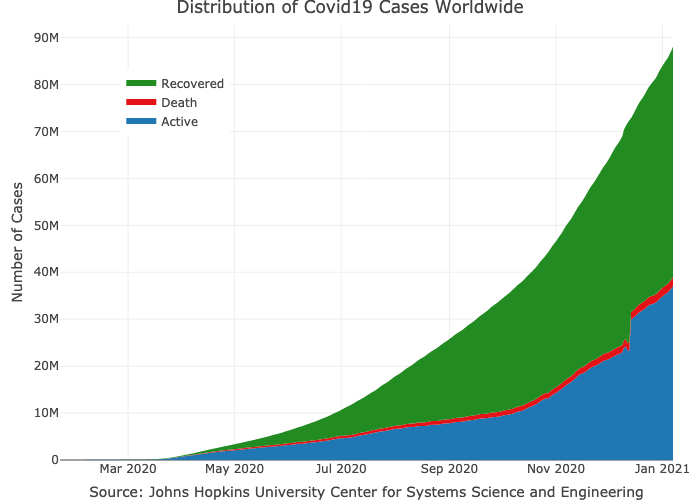
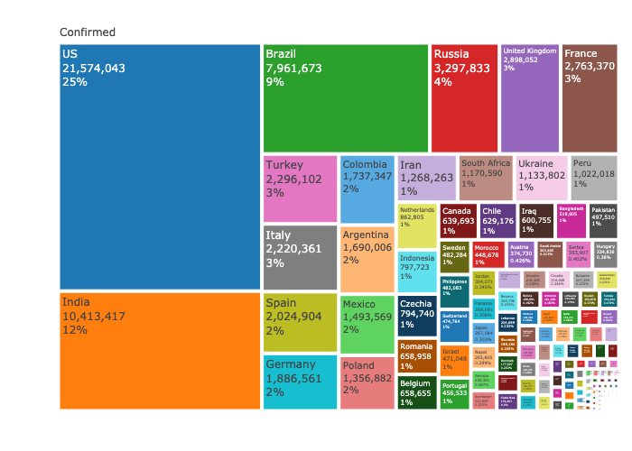

The coronavirus package provides a tidy format dataset of the 2019 Novel Coronavirus COVID-19 (2019-nCoV) epidemic. The raw data pulled from the Johns Hopkins University Center for Systems Science and Engineering (JHU CCSE) Coronavirus repository.
More details available here, and a csv format of the package dataset available here
A summary dashboard is available here

Important Note
As this an ongoing situation, frequent changes in the data format may occur, please visit the package news to get updates about those changes
Installation
Install the CRAN version:
install.packages("coronavirus")Install the Github version (refreshed on a daily bases):
# install.packages("devtools")
devtools::install_github("RamiKrispin/coronavirus")Data refresh
While the coronavirus CRAN version is updated every month or two, the Github (Dev) version is updated on a daily bases. The update_dataset function enables to overcome this gap and keep the installed version with the most recent data available on the Github version:
library(coronavirus)
update_dataset()Note: must restart the R session to have the updates available
Usage
data("coronavirus")This coronavirus dataset has the following fields:
-
date- The date of the summary -
province- The province or state, when applicable -
country- The country or region name -
lat- Latitude point -
long- Longitude point -
type- the type of case (i.e., confirmed, death) -
cases- the number of daily cases (corresponding to the case type)
head(coronavirus)
#> date province country lat long type cases
#> 1 2020-01-22 Afghanistan 33 65 confirmed 0
#> 2 2020-01-23 Afghanistan 33 65 confirmed 0
#> 3 2020-01-24 Afghanistan 33 65 confirmed 0
#> 4 2020-01-25 Afghanistan 33 65 confirmed 0
#> 5 2020-01-26 Afghanistan 33 65 confirmed 0
#> 6 2020-01-27 Afghanistan 33 65 confirmed 0Summary of the total confrimed cases by country (top 20):
library(dplyr)
summary_df <- coronavirus %>%
filter(type == "confirmed") %>%
group_by(country) %>%
summarise(total_cases = sum(cases)) %>%
arrange(-total_cases)
summary_df %>% head(20)
#> # A tibble: 20 x 2
#> country total_cases
#> <chr> <int>
#> 1 US 1369376
#> 2 Russia 232243
#> 3 Spain 228030
#> 4 United Kingdom 227741
#> 5 Italy 221216
#> 6 France 178349
#> 7 Brazil 178214
#> 8 Germany 173171
#> 9 Turkey 141475
#> 10 Iran 110767
#> 11 China 84018
#> 12 India 74292
#> 13 Canada 72419
#> 14 Peru 72059
#> 15 Belgium 53779
#> 16 Netherlands 43183
#> 17 Saudi Arabia 42925
#> 18 Mexico 38324
#> 19 Pakistan 34336
#> 20 Chile 31721Summary of new cases during the past 24 hours by country and type (as of 2020-05-12):
library(tidyr)
coronavirus %>%
filter(date == max(date)) %>%
select(country, type, cases) %>%
group_by(country, type) %>%
summarise(total_cases = sum(cases)) %>%
pivot_wider(names_from = type,
values_from = total_cases) %>%
arrange(-confirmed)
#> # A tibble: 187 x 4
#> # Groups: country [187]
#> country confirmed death recovered
#> <chr> <int> <int> <int>
#> 1 US 21495 1674 -2446
#> 2 Russia 10899 107 3711
#> 3 Brazil 8620 808 5213
#> 4 India 3524 121 1871
#> 5 United Kingdom 3409 628 8
#> 6 Peru 3237 96 918
#> 7 Pakistan 2255 31 257
#> 8 Mexico 1997 353 2835
#> 9 Saudi Arabia 1911 9 2520
#> 10 Turkey 1704 53 3109
#> # … with 177 more rowsPlotting the total cases by type worldwide:
library(plotly)
coronavirus %>%
group_by(type, date) %>%
summarise(total_cases = sum(cases)) %>%
pivot_wider(names_from = type, values_from = total_cases) %>%
arrange(date) %>%
mutate(active = confirmed - death - recovered) %>%
mutate(active_total = cumsum(active),
recovered_total = cumsum(recovered),
death_total = cumsum(death)) %>%
plot_ly(x = ~ date,
y = ~ active_total,
name = 'Active',
fillcolor = '#1f77b4',
type = 'scatter',
mode = 'none',
stackgroup = 'one') %>%
add_trace(y = ~ death_total,
name = "Death",
fillcolor = '#E41317') %>%
add_trace(y = ~recovered_total,
name = 'Recovered',
fillcolor = 'forestgreen') %>%
layout(title = "Distribution of Covid19 Cases Worldwide",
legend = list(x = 0.1, y = 0.9),
yaxis = list(title = "Number of Cases"),
xaxis = list(title = "Source: Johns Hopkins University Center for Systems Science and Engineering"))
Plot the confirmed cases distribution by counrty with treemap plot:
conf_df <- coronavirus %>%
filter(type == "confirmed") %>%
group_by(country) %>%
summarise(total_cases = sum(cases)) %>%
arrange(-total_cases) %>%
mutate(parents = "Confirmed") %>%
ungroup()
plot_ly(data = conf_df,
type= "treemap",
values = ~total_cases,
labels= ~ country,
parents= ~parents,
domain = list(column=0),
name = "Confirmed",
textinfo="label+value+percent parent")
Data Sources
The raw data pulled and arranged by the Johns Hopkins University Center for Systems Science and Engineering (JHU CCSE) from the following resources:
- World Health Organization (WHO): https://www.who.int/
- DXY.cn. Pneumonia. 2020. http://3g.dxy.cn/newh5/view/pneumonia.
- BNO News: https://bnonews.com/index.php/2020/02/the-latest-coronavirus-cases/
- National Health Commission of the People’s Republic of China (NHC):
http:://www.nhc.gov.cn/xcs/yqtb/list_gzbd.shtml
- China CDC (CCDC): http:://weekly.chinacdc.cn/news/TrackingtheEpidemic.htm
- Hong Kong Department of Health: https://www.chp.gov.hk/en/features/102465.html
- Macau Government: https://www.ssm.gov.mo/portal/
- Taiwan CDC: https://sites.google.com/cdc.gov.tw/2019ncov/taiwan?authuser=0
- US CDC: https://www.cdc.gov/coronavirus/2019-ncov/index.html
- Government of Canada: https://www.canada.ca/en/public-health/services/diseases/coronavirus.html
- Australia Government Department of Health: https://www.health.gov.au/news/coronavirus-update-at-a-glance
- European Centre for Disease Prevention and Control (ECDC): https://www.ecdc.europa.eu/en/geographical-distribution-2019-ncov-cases
- Ministry of Health Singapore (MOH): https://www.moh.gov.sg/covid-19
- Italy Ministry of Health: http://www.salute.gov.it/nuovocoronavirus
- 1Point3Arces: https://coronavirus.1point3acres.com/en
- WorldoMeters: https://www.worldometers.info/coronavirus/
- COVID Tracking Project: https://covidtracking.com/data. (US Testing and Hospitalization Data. We use the maximum reported value from “Currently” and “Cumulative” Hospitalized for our hospitalization number reported for each state.)
- French Government: https://dashboard.covid19.data.gouv.fr/
- COVID Live (Australia): https://www.covidlive.com.au/
- Washington State Department of Health: https://www.doh.wa.gov/emergencies/coronavirus
- Maryland Department of Health: https://coronavirus.maryland.gov/
- New York State Department of Health: https://health.data.ny.gov/Health/New-York-State-Statewide-COVID-19-Testing/xdss-u53e/data
- NYC Department of Health and Mental Hygiene: https://www1.nyc.gov/site/doh/covid/covid-19-data.page and https://github.com/nychealth/coronavirus-data
- Florida Department of Health Dashboard: https://services1.arcgis.com/CY1LXxl9zlJeBuRZ/arcgis/rest/services/Florida_COVID19_Cases/FeatureServer/0 and https://fdoh.maps.arcgis.com/apps/opsdashboard/index.html#/8d0de33f260d444c852a615dc7837c86
- Palestine (West Bank and Gaza): https://corona.ps/details
- Israel: https://govextra.gov.il/ministry-of-health/corona/corona-virus/
- Colorado: https://covid19.colorado.gov/covid-19-data